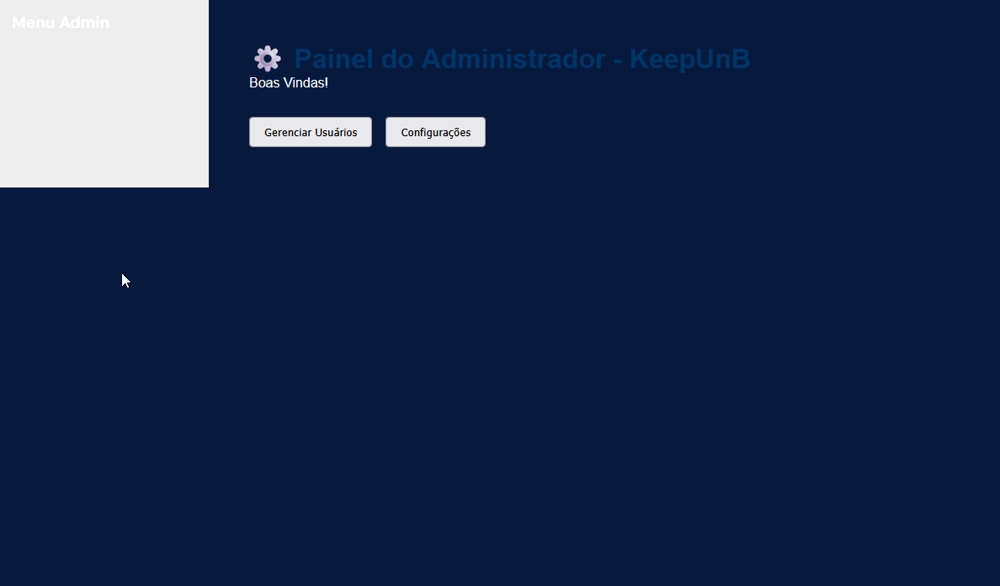

Relatório de Qualidade (QA) - Sprint 4¶
📌 Baseado no commit:
3160cb1· branch:developer
Este documento detalha os testes de sistema, verificações de interface e funcionalidades pendentes identificadas durante a Sprint 4.
1. Páginas e Funcionalidades Incompletas¶
- Esqueci minha senha: Página e funcionalidade de recuperação de senha ainda não foram implementadas.
- Registro de usuário ✅: Página e funcionalidade de criação de conta ainda não foram implementadas (Resolvido).
- Exportar relatório em PDF: Funcionalidade de exportação na aba de relatórios do perfil de gerente ainda não foi implementada.
- Painel do administrador ✅: Página e funcionalidades de gerenciamento de usuários e configurações ainda não foram implementadas (Resolvido).

2. Problemas de Interface¶
Frontpage (Layout Mobile) ✅¶
A interface da frontpage precisava de ajustes para exibição correta em dispositivos móveis. (Resolvido)
Overflow de texto¶
Locais com muitos caracteres transbordam a interface do Desktop e do Mobile nas seguintes páginas:
-
Dashboard do Solicitante (
/solicitante/dashboard)
-
Atribuição do Gerente (
/gerente/atribuicao)
-
Painel do Gerente (
/gerente/painel- especificamente no painel de delegação de chamado)
-
Fila do Técnico (
/tecnico/fila)
-
Detalhe do Chamado (
/tecnico/chamado)
Adequar página do Técnico para o mobile ✅¶

3. Sugestões de Melhoria¶
- Prioridade Baixa 🟢: Separar chamados baseado no status atual para todos os perfis (pode ser implementado por “ordenar por status” ou organizando em seções). ✅ (Resolvido)